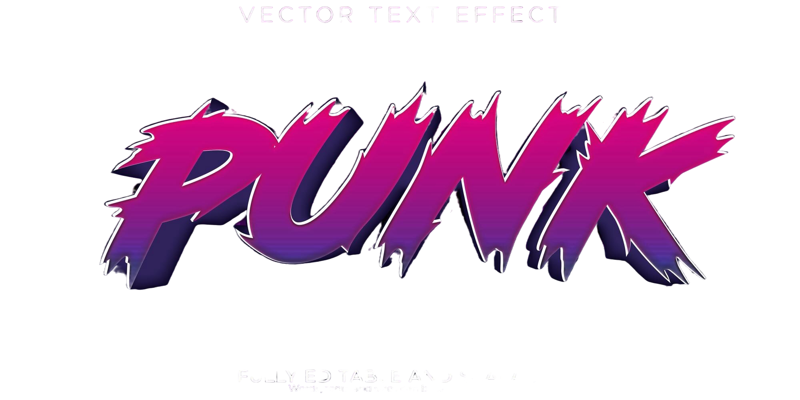

Welcome to
 Quero conhecer!O que foi o Movimento Barroco?
O Barroco foi um movimento artístico, literário e cultural que se desenvolveu entre os séculos XVI e XVIII, marcando uma profunda transformação no modo de pensar e representar o mundo. Surgido inicialmente na Itália, o estilo espalhou-se por diversos países europeus e chegou à América Latina, influenciando fortemente as manifestações culturais no Brasil colonial. O Barroco é, acima de tudo, uma arte de contrastes: entre razão e fé, luz e sombra, corpo e espírito, mundo terreno e salvação eterna. Esse movimento surgiu em um contexto de intensas mudanças históricas, como a Reforma Protestante, a Contrarreforma Católica e os avanços científicos da modernidade. Nesse cenário, o Barroco expressa a tensão existencial vivida pelo homem da época, dividido entre os valores medievais ainda presentes e os ideais modernos que começavam a emergir. A arte barroca, assim, não apenas decora ou enfeita, mas busca comover, envolver e transmitir uma mensagem espiritual profunda, muitas vezes carregada de dramaticidade. Na literatura, o Barroco se caracteriza pelo uso de uma linguagem rebuscada, repleta de figuras de linguagem como antítese, paradoxo, hipérbole e metáforas. Dois estilos se destacam: o cultismo, com foco na ornamentação verbal e jogos de palavras, e o conceptismo, que privilegia o raciocínio lógico e a argumentação. Em Portugal, o grande nome da literatura barroca é o padre Antônio Vieira, cujos sermões aliam vigor retórico, densidade filosófica e forte engajamento religioso. No Brasil, Gregório de Matos, conhecido como "Boca do Inferno", é o expoente máximo, com sua poesia que alterna entre a crítica social mordaz e a religiosidade angustiada. Nas artes plásticas e na arquitetura, o Barroco se manifesta em construções suntuosas, uso dramático da luz e da sombra (claroscuro), além de composições dinâmicas, com forte expressividade emocional. No Brasil, destaca-se o trabalho de Aleijadinho, especialmente nas igrejas e esculturas do período colonial em Minas Gerais, onde o Barroco ganhou contornos próprios, influenciados pela religiosidade popular e pela realidade colonial. Portanto, compreender o Barroco é entender um momento de transição e conflito, onde o ser humano busca respostas para suas dúvidas mais profundas. É uma arte que reflete a complexidade da alma humana, marcada por contradições e desejos. Mesmo séculos depois, o Barroco continua nos provocando com sua intensidade e profundidade, revelando as inquietações que ainda habitam o espírito humano.